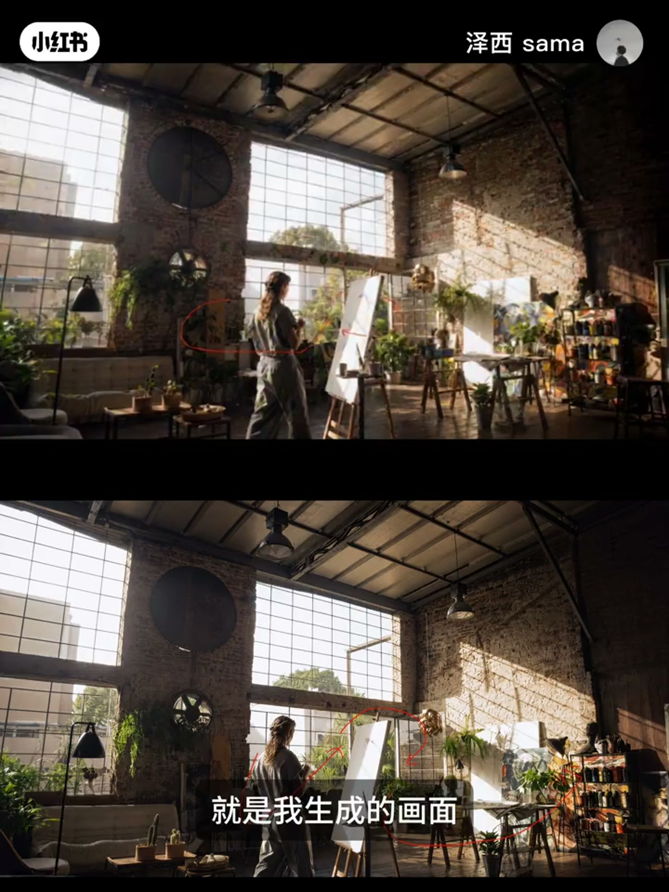
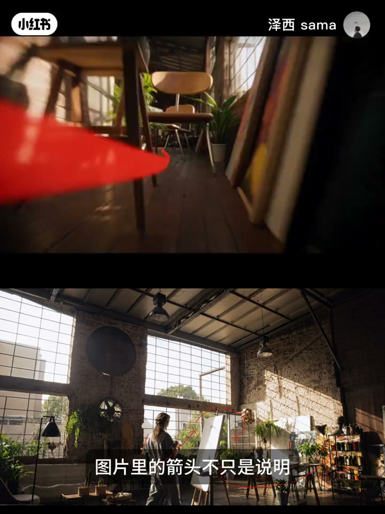
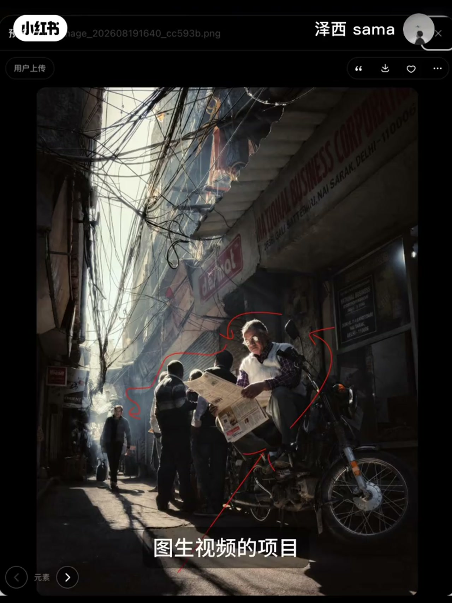
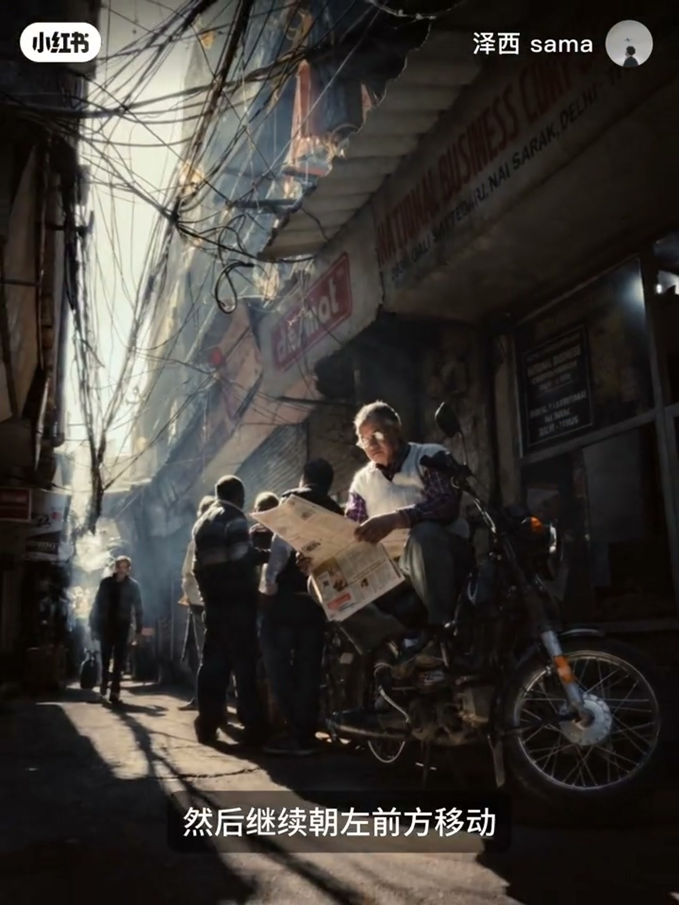

内容要点
泽西 sama 试了二十多次、花掉大量积分后，总结出一套更稳的「箭头运镜」流程：别在最终画面上画箭头硬生成，而是同时上传一张干净原图和一张路径参考图，再用文字把箭头翻译成具体镜头语言。核心判断是——对视频模型来说，图里的箭头不只是说明，也可能被当成画面里的真实涂鸦。
知识结构
箭头运镜很火，但生成结果常把箭头留在成片里；作者反复测试后找到较稳定做法。
对视频模型，图片里的箭头可能被识别为真实元素；颜色鲜艳、画得很粗的红箭头尤其像涂鸦或标记。
把运镜参考与最终画面分开：一张无标记原图作最终画面，一张路径图只负责告诉镜头怎么走；两张一起上传并写清各自用途。
不要只写「按箭头运镜」，要写清起点、靠近谁、从哪侧经过、停在哪里；作者用德里巷道低机位环绕读报老人的提示词作范例。
箭头运镜想稳定，关键不是反复强调「不要出现箭头」，而是把路径参考和最终画面拆开：干净原图定长相，路径图定走位，文字把箭头翻译成可执行的镜头语言。粗红箭头留在单张合成图里，最容易被模型当涂鸦画进视频。
00:00-00:13试了二十多次：箭头总留在成片里
作者开场说最近「画箭头运镜」的方式很火，自己尝试二十多次、耗费大量积分，才找到一套比较稳定的方法。紧接着亮出痛点：生成的画面里还会出现箭头，像真实画在场景上一样。

00:13-00:32为什么箭头会被画进视频
原因写得很直白：对视频模型来说，图片里的箭头不只是说明，也有可能被当成画面里的真实元素。「尤其是颜色鲜艳、画得很粗的红色箭头，很容易被识别成涂鸦或者是标记。」
因此关键不是反复强调「不要出现箭头」，而是把运镜参考和最终画面分开处理。

00:32-00:50两张图分工：干净原图 + 路径图
在剪映 AI（笔记侧也写作 Flova）里准备两张图：一张没有任何标记的原图，作为最终参考画面；另一张是画了路径的运镜参考图。新建图生视频项目，把两张图一起上传，并明确告诉模型：第一张是最终参考画面，第二张只用于理解摄像机的运动运镜。

00:50-01:22把箭头翻译成可执行的镜头语言
第三步是把箭头翻译成镜头语言：不要只写「按照箭头运镜」，要写清楚箭头从哪里出发、靠近谁、从哪一侧经过、最后停到哪里。
以示范画面为例，他详细描述：从贴近地面的低机位开始，沿巷道缓慢向前推进，靠近右侧摩托车后轻微抬升，从读报老人的右侧平行环绕，再继续朝左前方移动。片尾放出完整提示词，方便复制粘贴使用。

完整转录（11段）
以下文本由 Whisper medium 模型自动转录，可能存在少量识别误差，已尽可能修正。
最近这个画箭头运箭的方式非常的火,我在尝试了20多次,耗费了5000几分,终于找到了一套比较稳定的方法。
先讲一下我遇到的问题,就是我生成的画面它会有箭头出现在画面里面,就像这样。
为什么箭头会出现在视频里,因为对于视频模型来说,图片里的箭头不只是寿命,也有可能会被当成画面里面的真实元素,
尤其是颜色鲜艳卸掉很粗的红色箭头,很容易被识别成涂鸦或者是标记。
所以关键不是反复强调不要出现箭头,而是把运镜参考和最终画面分开。
在Flower里面,我们准备两张图,一张是没有任何标记的原图,作为最终的参考画面,另一张是录镜图。
第二步,我们在Flower里面新建图身视频的项目,把两张图片一起上传,并明确告诉它。
第一张图片是最终的参考画面,第二张图片只用于理解摄像机的用途录镜。
第三步,把箭头翻译成镜头语言,不要只写按照箭头运镜,要写清楚箭头是从哪里出发,靠近谁,然后从哪一侧经过,最后停到哪里,比如说我们这个画面。
我就详细描述了箭头从贴近地面的低阶位开始沿着向道缓慢向前推进,靠近右侧摩托车后轻微地抬身从独步老人的右侧平行环绕,然后继续朝左前方移动。
下面就是我的提示词,你可以作为参考来复制连接使用,这就是我这期的分享,我们下期再见。